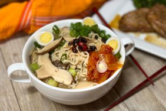

Home
Mushroom Ramen Recipe

Description
This mushroom ramen is a delicious and easy recipe that can be made in
under 30 minutes.
Ingredients
- 1 (3 ounce) package ramen noodles
- 1 cup sliced fresh mushrooms
- 1/2 cup chopped green onions
- 1 tablespoon soy sauce
- 1 tablespoon sesame oil
- 1 tablespoon rice vinegar
- 1 tablespoon sugar
- 1 tablespoon cornstarch
- 1 tablespoon water
- 1 tablespoon soy sauce
Steps
- Bring a large pot of water to a boil.
- Add ramen noodles and cook for 3 to 5 minutes.
- Drain and rinse with cold water.